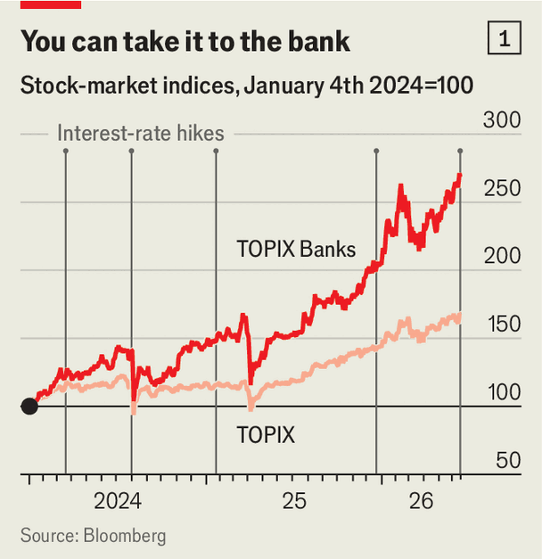

A new golden age for Japanese banks comes with a catch
Smaller lenders are saddled with low-return bonds they cannot sell
June 18th 2026

FOR nearly 31 years, as Japan struggled with low growth and bouts of deflation, its benchmark interest rate began with a zero, sometimes with a minus in front of it. So the decision by the Bank of Japan (BoJ) on June 16th to raise it from 0.75% to 1% carried symbolic weight. Few Japanese businesses are happier to see the back of zero than banks, whose balance-sheets are reviving after three decades of punishing strain. Since the BoJ started raising rates in March 2024 the index of Japanese bank shares has more than doubled, far outpacing the broader stock market (see chart 1).
Banks borrow money from depositors at short-term rates (set by the BoJ) and lend to borrowers at long-term ones (determined by the bond market). In a zero-rate world they could pay depositors next to nothing but eked out little more from reluctant borrowers. “Net interest margins”, which reflect the difference between interest income and interest expenses, languished. So did banks’ profits.

Today the gap between short-term and long-term rates is up from near zero to 1.6 percentage points. That should be great news for lenders. And it is—if they are big. Net interest income at Japan’s three mega-banks—MUFG, SMBC and Mizuho—has increased by a third on average since 2024 (see chart 2). They expect record profits this year. Small banks, though, continue to struggle. And their balance-sheets may be storing up trouble for the banking system as a whole.
Between 2022 and 2025 the share prices of the smallest fifth of Japanese banks by assets rose by half as much as those of the largest three-fifths. In part, that is because banking is about scale. Bigger banks can use their vast balance-sheets to squeeze more profit out of the same net interest margin, while diversifying risks. They can spread fixed costs on things like technology over more assets. Smaller Japanese banks, by contrast, tend to spend a higher share of revenue on overheads and carry more non-performing loans, according to Ito Naoki of Verdad, an asset manager.

Japan’s 61 regional banks are also struggling to attract deposits. These have grown by just 6% since 2022, compared with 17% for mega-rivals better able to roll out whizzy digital-banking features and stock-brokerage offerings to take advantage of new tax-advantaged investment accounts.
A bigger problem for small lenders is dealing with their share of the ¥150trn ($936bn) in domestic bonds held by banks. Bought when interest rates were low, many of these are trading below face value. Big lenders can absorb their large absolute losses with relative ease, especially now that their profits are rising again. Smaller banks have no such luck. Losses on yen bonds amount to 2% or so of risk-weighted assets at the regional banks and 4% at the 250 or so shinkin community banks, the BoJ found earlier this year. Given that banks are generally advised to hold a capital cushion of around 10% of their risk-weighted assets, this is troubling.
One way of dealing with the stress is to link up. In May Aichi and San ju San, two regional banks, agreed to a ¥12trn merger, the latest in a string of them. A more dubious method involves creative accounting. The share of banks’ holdings of long-dated Japanese government bonds marked as “held to maturity” rather than “available for sale” rose from zero in 2019 to nearly half in 2025, reckons AMRO, a think-tank.
On paper, this locks in both the low yields and the principal, reducing the interest-rate sensitivity of a bank’s portfolio. In practice, it can bury risks that imperil a banking system. This nearly happened in America in 2023 after regional banks sitting on unrealised bond losses failed. One, Silvergate Capital, sold bonds marked as “held to maturity” to improve liquidity. Critics accused another, Silicon Valley Bank (SVB), of using similar designations to hide losses from rising interest rates that would have wiped out its capital.
For now Japan’s regional banks look sturdier than Silvergate or SVB. The BoJ estimates that absorbing unrealised losses on their securities holdings would still leave them with ample capital, in part thanks to their profitable investments in stocks. But some smaller lenders will almost certainly come under pressure, especially in regions where Japan’s ageing population is declining fastest—and with it the banks’ deposit base. The faster Japan puts the zero-rate era behind it, the sooner this reckoning will come. ■
For more expert analysis of the biggest stories in economics, finance and markets, sign up to Money Talks, our weekly subscriber-only newsletter.